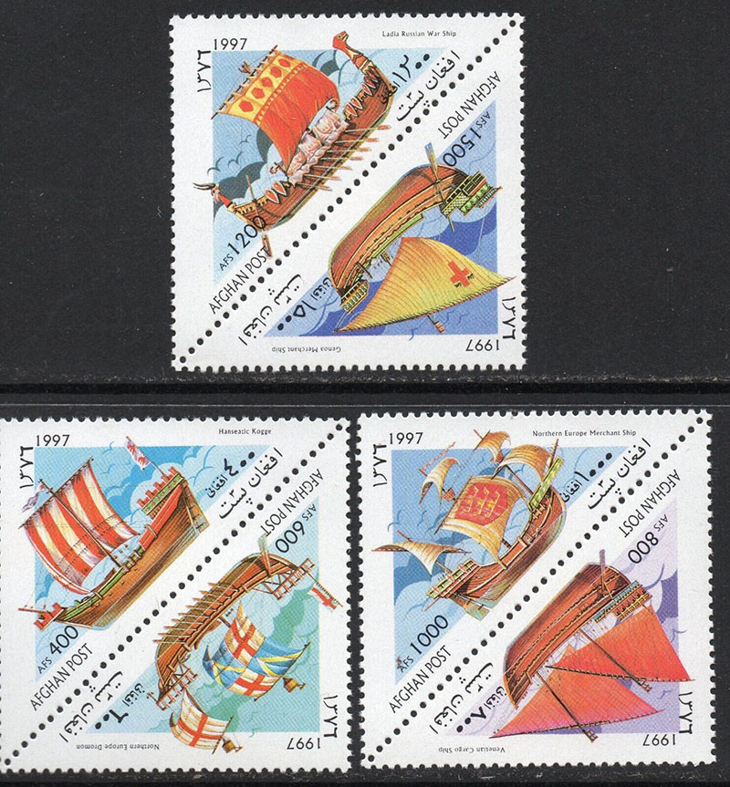
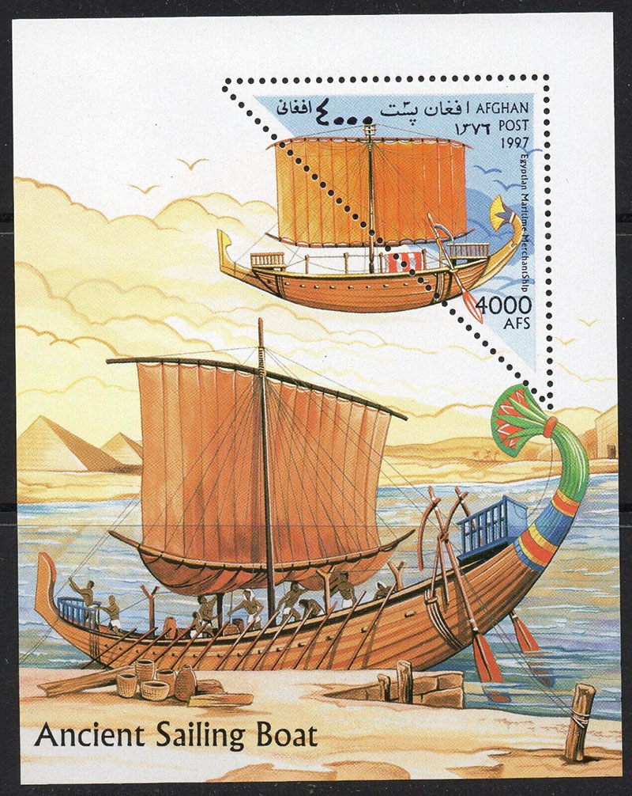
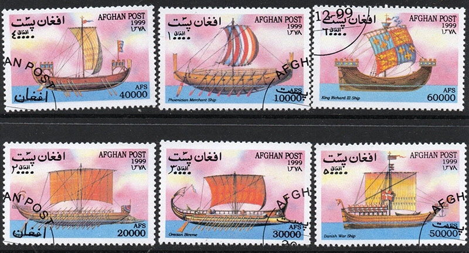
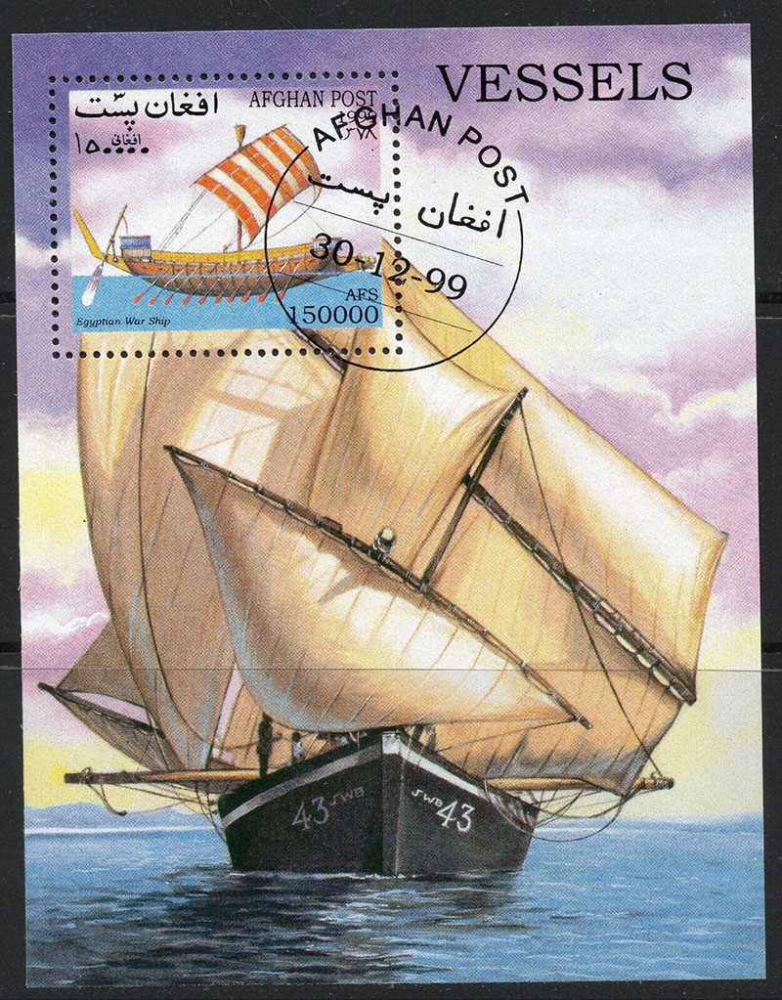

|
|
ILLEGAL STAMPS OF AFGHANISTAN REVISITED
Victor Manta
Philatelic journalist, PWO (*)
Although the Universal Postal Union (UPU) website no longer contains Circulars regarding stamps claimed by postal administrations prior to 2008, some of the UPU Circulars have remained published on this website.
In this article, we will refer to the UPU Circulars regarding illegal stamps of Afghanistan, with #345 of 21 August 2000 and #2 of 13 January 2003 (link). Here are two important quotes from them:

- The postal administration of Afghanistan also points out that, because of certain problems, it has not been able to print or issue any new postage stamps since 1989. Consequently, any postage stamps issued since 1989 are illegal issues.
- Unidentified individuals have been seeking to discredit our country through the circulation of illegal postage stamps... These stamps are, moreover, illegal. They have been issued without our administration's knowledge and in violation of articles 6 and 25.2.3 of the Universal Postal Convention, the UPU Regulations and the legislation of the Transitional Islamic State of Afghanistan. These stamps have no value as collector's items or for postal prepayment."

A list of 35 (!) positions follows, with about 300 types of illegal stamps and souvenir sheets, called Boats, Chess, Fauna, Flora, Paintings, etc.
The second circular speaks of "Unidentified individuals have been seeking to discredit our country through the circulation of illegal postage stamps." We will show in the following that this is not about some "individuals", but about a (communist) state organization with wide ramifications and resources left at hand.
The breakthrough comes thanks to a researcher essentially in numismatics from Russia, Mr. Anton Andreev, who noticed that the stamps managed by the Cuban organization COPREFIL became, during the period 1991 - 2000, a massive means of spreading on the world philatelic markets of stamps denounced by many UPU member states under the name of illegal stamps. We have published on this site an abbreviated PDF version, in English, which Mr. Andreev himself kindly made available to us as document (link).

We should not pay too much attention to the fact that a non-philatelist uses euphemisms like Cinderella or non-postal stamps for what the UPU has defined as illegal stamps, as these are names that try to hide under various phantom names the predatory and deceptive nature of the "stamps" in question. Some, like those presented on this page, or some in Mr. Andreev's article, are disguised by perfectly valid numbers from the Michel catalogue, thus deceiving the vigilance, which often anyway leaves much to be desired, of novice philatelists.
COPREFIL, which lost its financial resources, like the entire Cuban regime, after the disintegration of the USSR, quickly found a way to revalue its potential, as Mr. Andreev's article shows, by producing and distributing illegal stamps for countries such as Afghanistan, Benin, Cambodia, Guinea, and the Sahrawi Arab Democratic Republic (The SADR).

This action also continued the tradition of undermining the free-market economies of the world, in the old Cold War tradition. To add insult to injury, the Boats series issued in the name of Afghanistan most likely also infringed on the copyrights of some talented Russian painters.
(*) PWO is the short for the Philatelic Webmaster Organization, whose website can be found at https://pwmo.org